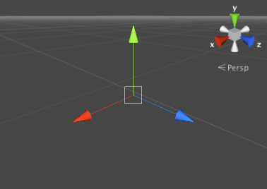
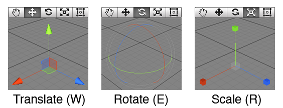
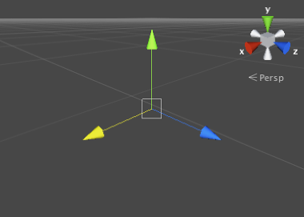
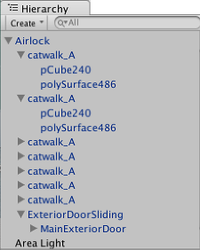

Transforms
The Transform is used to store a GameObject's position, rotation, scale and parenting state and is thus very important. A GameObject will always have a Transform component attached - it is not possible to remove a Transform or to create a GameObject without one.
Editing Transforms
Transforms are manipulated in 3D space in the X, Y, and Z axes or in 2D space in just X and Y. In Unity, these axes are represented by the colors red, green, and blue respectively.

A Transform can be edited in the Scene View or by changing its properties in the Inspector. In the scene, you can modify Transforms using the Move, Rotate and Scale tools. These tools are located in the upper left-hand corner of the Unity Editor.
The tools can be used on any object in the scene. When you click on an object, you will see the tool gizmo appear within it. The appearance of the gizmo depends on which tool is selected.

When you click and drag on one of the three gizmo axes, you will notice that its color changes to yellow. As you drag the mouse, you will see the object translate, rotate, or scale along the selected axis. When you release the mouse button, the axis remains selected.

There is also an additional option in Translate mode to lock movement to a particular plane (ie, allow dragging in two of the axes while keeping the third unchanged). The three small coloured squares around the center of the Translate gizmo activate the lock for each plane; the colors correspond to the axis that will be locked when the square is clicked (eg, blue locks the Z axis).
Parenting
Parenting is one of the most important concepts to understand when using Unity. When a GameObject is a Parent of another GameObject, the Child GameObject will move, rotate, and scale exactly as its Parent does. You can think of parenting as being like the relationship between your arms and your body; whenever your body moves, your arms also move along with it. Child objects can also have children of their own and so on. So your hands could be regarded as "children" of your arms and then each hand has several fingers, etc. Any object can have multiple children, but only one parent. These multiple levels of parent-child relationships form a Transform hierarchy. The object at the very top of a hierarchy (ie, the only object in the hierarchy that doesn't have a parent) is known as the root.
You can create a Parent by dragging any GameObject in the Hierarchy View onto another. This will create a Parent-Child relationship between the two GameObjects.

Note that the Transform values in the Inspector for any child GameObject are displayed relative to the Parent's Transform values. These values are referred to as local coordinates. Returning to the analogy of body and arms, the position of your body may move as you walk but your arms will still be attached at the same relative position. For scene construction, it is usually sufficient to work with local coordinates for child objects but in gameplay it is often useful to find their exact position in world space or global coordinates. The scripting API for the Transform component has separate properties for local and global position, rotation and scale and also allows you to convert any point between local and global coordinates.
Limitations with Non-Uniform Scaling
Non-uniform scaling is when the Scale in a Transform has different values for x, y, and z; for example (2, 4, 2). In contrast, uniform scaling has the same value for x, y, and z; for example (3, 3, 3). Non-uniform scaling can be useful in a few specific cases but it introduces a few oddities that don't occur with uniform scaling:-
- Certain components do not fully support non-uniform scaling. For example, some components have a circular or spherical element defined by a radius property, among them Sphere Collider, Capsule Collider, Light and Audio Source. In cases like this the circular shape will not become elliptical under non-uniform scaling as you would expect and will simply remain circular.
- When a child object has a non-uniformly scaled parent and is rotated relative to that parent, it may appear skewed or "sheared". There are components that support simple non-uniform scaling but don't work correctly when skewed like this. For example, a skewed Box Collider will not match the shape of the rendered mesh accurately.
- For performance reasons, a child object of a non-uniformly scaled parent will not have its scale automatically updated when it rotates. As a result, the child's shape may appear to change abruptly when the scale eventually is updated, say if the child object is detached from the parent.
Importance of Scale
The scale of the Transform determines the difference between the size of a mesh in your modeling application and the size of that mesh in Unity. The mesh's size in Unity (and therefore the Transform's scale) is very important, especially during physics simulation. By default, the physics engine assumes that one unit in world space corresponds to one metre. If an object is very large, it can appear to fall in "slow motion"; the simulation is actually correct since effectively, you are watching a very large object falling a great distance.
There are three factors that can affect the scale of your object:
- The size of your mesh in your 3D modeling application.
- The Mesh Scale Factor setting in the object's Import Settings.
- The Scale values of your Transform Component.
Ideally, you should not adjust the Scale of your object in the Transform Component. The best option is to create your models at real-life scale so you won't have to change your Transform's scale. The next best option is to adjust the scale at which your mesh is imported in the Import Settings for your individual mesh. Certain optimizations occur based on the import size, and instantiating an object that has an adjusted scale value can decrease performance. For more information, see the section about optimizing scale on the Rigidbody component reference page.
Tips for Working with Transforms
- When parenting Transforms, it is useful to set the parent's location to <0,0,0> before adding the child. This means that the local coordinates for the child will be the same as global coordinates making it easier to be sure you have the child in the right position.
- Particle Systems are not affected by the Transform's Scale. In order to scale a Particle System, you need to modify the properties in the System's Particle Emitter, Animator and Renderer.
- If you are using Rigidbodies for physics simulation then be sure to read about the Scale property on the Rigidbody component reference page.
- You can change the colors of the Transform axes (and other UI elements) from the preferences (Menu: Unity > Preferences and then select the Colors & keys panel).
- Changing the Scale affects the position of child transforms. For example scaling the parent to (0,0,0) will position all children at (0,0,0) relative to the parent.